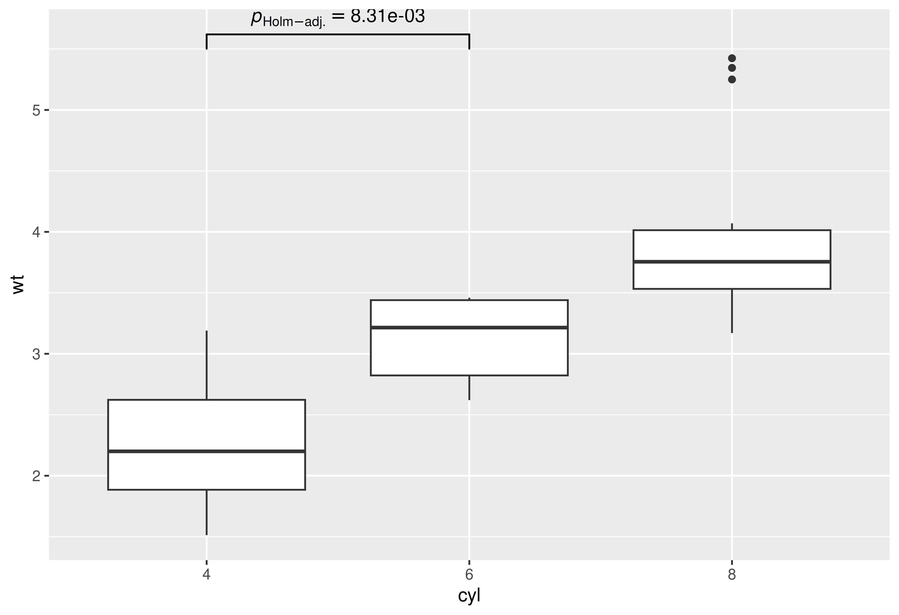
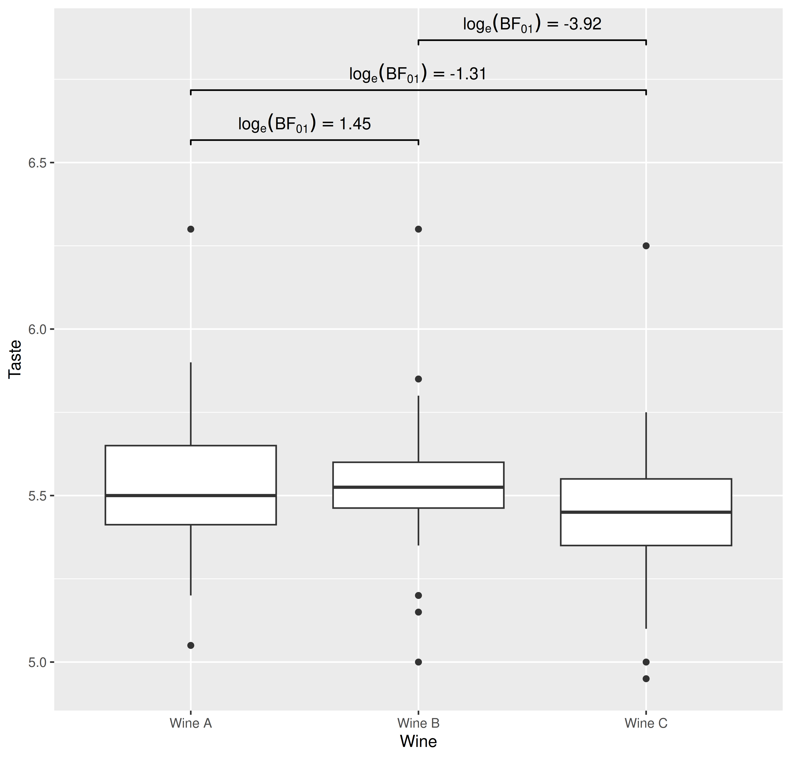

{ggstatsplot}
vignettes/web_only/pairwise.Rmd
pairwise.RmdYou can cite this package/vignette as:
To cite package 'ggstatsplot' in publications use:
Patil, I. (2021). Visualizations with statistical details: The
'ggstatsplot' approach. Journal of Open Source Software, 6(61), 3167,
doi:10.21105/joss.03167
A BibTeX entry for LaTeX users is
@Article{,
doi = {10.21105/joss.03167},
url = {https://doi.org/10.21105/joss.03167},
year = {2021},
publisher = {{The Open Journal}},
volume = {6},
number = {61},
pages = {3167},
author = {Indrajeet Patil},
title = {{Visualizations with statistical details: The {'ggstatsplot'} approach}},
journal = {{Journal of Open Source Software}},
}Pairwise comparisons with ggstatsplot.
Following table contains a brief summary of the currently supported pairwise comparison tests-
| Type | Equal variance? | Test | p-value adjustment? | Function used |
|---|---|---|---|---|
| Parametric | No | Games-Howell test | ✅ | PMCMRplus::gamesHowellTest |
| Parametric | Yes | Student’s t-test | ✅ | stats::pairwise.t.test |
| Non-parametric | No | Dunn test | ✅ | PMCMRplus::kwAllPairsDunnTest |
| Robust | No | Yuen’s trimmed means test | ✅ | WRS2::lincon |
| Bayesian | NA |
Student’s t-test | NA |
BayesFactor::ttestBF |
| Type | Test | p-value adjustment? | Function used |
|---|---|---|---|
| Parametric | Student’s t-test | ✅ | stats::pairwise.t.test |
| Non-parametric | Durbin-Conover test | ✅ | PMCMRplus::durbinAllPairsTest |
| Robust | Yuen’s trimmed means test | ✅ | WRS2::rmmcp |
| Bayesian | Student’s t-test | NA |
BayesFactor::ttestBF |
See data frame outputs here.
pairwise_comparisons() with
ggsignif
library(ggplot2)
library(ggsignif)
## converting to factor
mtcars$cyl <- as.factor(mtcars$cyl)
## creating a basic plot
p <- ggplot(mtcars, aes(cyl, wt)) +
geom_boxplot()
## using `pairwise_comparisons()` package to create a data frame with results
(df <-
pairwise_comparisons(mtcars, cyl, wt) %>%
dplyr::mutate(groups = purrr::pmap(.l = list(group1, group2), .f = c)) %>%
dplyr::arrange(group1))
#> # A tibble: 3 × 10
#> group1 group2 statistic p.value alternative distribution p.adjust.method
#> <chr> <chr> <dbl> <dbl> <chr> <chr> <chr>
#> 1 4 6 5.39 0.00831 two.sided q Holm
#> 2 4 8 9.11 0.0000124 two.sided q Holm
#> 3 6 8 5.12 0.00831 two.sided q Holm
#> test expression groups
#> <chr> <list> <list>
#> 1 Games-Howell <language> <chr [2]>
#> 2 Games-Howell <language> <chr [2]>
#> 3 Games-Howell <language> <chr [2]>
## using `geom_signif` to display results
## (note that you can choose not to display all comparisons)
p +
ggsignif::geom_signif(
comparisons = list(df$groups[[1]]),
annotations = as.character(df$expression)[[1]],
test = NULL,
na.rm = TRUE,
parse = TRUE
)
library(ggplot2)
library(ggsignif)
## creating a basic plot
p <- ggplot(WRS2::WineTasting, aes(Wine, Taste)) +
geom_boxplot()
## using `pairwise_comparisons()` package to create a data frame with results
(df <-
pairwise_comparisons(
WRS2::WineTasting,
Wine,
Taste,
subject.id = Taster,
type = "bayes",
paired = TRUE
) %>%
dplyr::mutate(groups = purrr::pmap(.l = list(group1, group2), .f = c)) %>%
dplyr::arrange(group1))
#> # A tibble: 3 × 19
#> group1 group2 term effectsize estimate conf.level conf.low
#> <chr> <chr> <chr> <chr> <dbl> <dbl> <dbl>
#> 1 Wine A Wine B Difference Bayesian t-test 0.00721 0.95 -0.0418
#> 2 Wine A Wine C Difference Bayesian t-test 0.0755 0.95 0.0127
#> 3 Wine B Wine C Difference Bayesian t-test 0.0693 0.95 0.0303
#> conf.high pd prior.distribution prior.location prior.scale bf10
#> <dbl> <dbl> <chr> <dbl> <dbl> <dbl>
#> 1 0.0562 0.624 cauchy 0 0.707 0.235
#> 2 0.140 0.990 cauchy 0 0.707 3.71
#> 3 0.110 1.00 cauchy 0 0.707 50.5
#> conf.method log_e_bf10 n.obs expression test groups
#> <chr> <dbl> <int> <list> <chr> <list>
#> 1 ETI -1.45 22 <language> Student's t <chr [2]>
#> 2 ETI 1.31 22 <language> Student's t <chr [2]>
#> 3 ETI 3.92 22 <language> Student's t <chr [2]>
## using `geom_signif` to display results
p +
ggsignif::geom_signif(
comparisons = df$groups,
map_signif_level = TRUE,
tip_length = 0.01,
y_position = c(6.5, 6.65, 6.8),
annotations = as.character(df$expression),
test = NULL,
na.rm = TRUE,
parse = TRUE
)